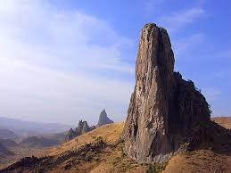

1. Mount Cameroon
Mount Cameroon is an active volcano and the highest peak in Cenrtral Africa, offering breathtaking views and hiking opportunities.

Cameroon is home to a variety of stunning attractions that showcase its natural beauty and cultural heritage. Here are some must-visit places:
Mount Cameroon is an active volcano and the highest peak in Cenrtral Africa, offering breathtaking views and hiking opportunities.
Waza National Park is a wildlife sanctuary known for its diverse fauna, including elephants, lions, and various bird species.
Limbe is famous for its beautiful beaches, where visitors can relax, swim, and enjoy water sports.
This UNESCO World Heritage site is one of the largest and best-preserved rainforests in Africa, home to diverse wildlife and plant species.

The capital city of Cameroon, Yaoundé, offers a mix of modernity and tradition, with museums, markets, and cultural sites to explore.